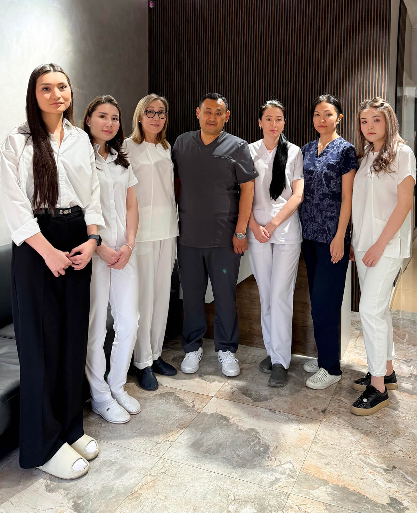
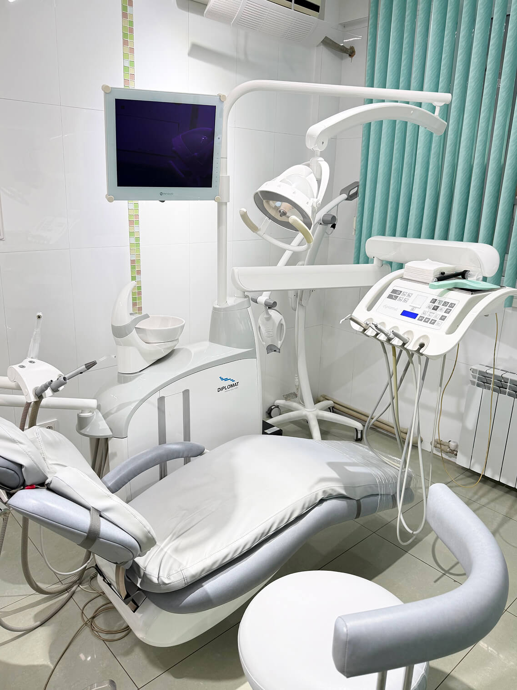
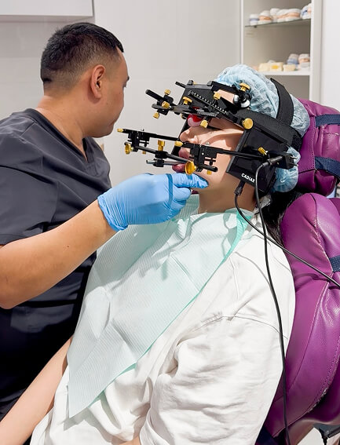

На консультации
Обсуждаем вопросы и план лечения
Лечение под микроскопом, цифровое моделирование и комплексный подход — от здоровья зубов до правильной работы челюстного сустава.

Обсудите с врачом свои пожелания, задайте вопросы и узнайте о вариантах лечения.
Записаться на консультацию
3D-исследования помогают составить план лечения с учётом вашей ситуации.
Детальная работа с каналами зубов под увеличением.
Изучаем работу сустава, прикус и функцию зубочелюстной системы.
WaxUp / MockUp позволяет обсудить будущую форму улыбки до лечения.
Терапия, ортодонтия, имплантация и лечение дёсен в одной клинике.
Клиника сочетает опыт врачей и современные технологии.

Одно из ключевых направлений Almeda Stom — диагностика и лечение височно-нижнечелюстного сустава с помощью кондилографии.
Специалисты клиники в ежедневной работе. Фотографии с официального сайта Almeda Stom.
Обсуждаем вопросы и план лечения
Современные технологии в работе
Диагностика и цифровое оборудование
Фотография с сайта клиники
Кондилография в Almeda Stom
Лечение с использованием микроскопа
Цены с официального сайта клиники. Итоговую стоимость и состав лечения уточняйте на консультации.
Передвигайте ползунок, чтобы сравнить состояние до и после лечения.
Лечение множественного кариеса и отбеливание системой ZOOM. Материал опубликован на официальном сайте клиники. План и результат лечения индивидуальны.
Ортодонтическое лечение на брекет-системе. Материал опубликован на официальном сайте клиники. План и результат лечения индивидуальны.
Ортодонтическое лечение с помощью элайнеров. Материал опубликован на официальном сайте клиники. План и результат лечения индивидуальны.
Восстановление зубов с помощью имплантации и протезирования. Материал опубликован на официальном сайте клиники. План и результат лечения индивидуальны.
Фотографии и подписи — с официального сайта клиники.
Almeda Stom работает в Алматы с 2014 года. В клинике объединены терапия, имплантация, ортодонтия, пародонтология и гнатология.
Точная диагностика, лечение под микроскопом и цифровое моделирование помогают составить комплексный план лечения.
Краткое содержание отзывов, опубликованных на официальном сайте Almeda Stom.
Отмечает внимательное отношение команды, чистоту клиники и подробные объяснения врачей.
Рассказывает о спокойном лечении, бережной работе врачей и вежливом персонале.
Благодарит за удаление отложений под дёснами и делится впечатлениями о процедуре.
Делится опытом исправления прикуса, имплантации и лечения зубов в клинике.
Рассказывает о лечении кариеса, имплантации и регулярных профилактических осмотрах.
Отмечает оснащение клиники, профессионализм и внимание лечащего врача.
Алматы, ЖК Отрар, микрорайон Таугуль-1, 52Б.
Клиника работает с понедельника по пятницу с 07:00 до 16:00, в субботу — с 08:00 до 13:00. Время приёма уточняйте у администратора.
Да. На сайте клиники указаны кондилография, цефалометрия, 3D-рентген ВНЧС и сплинт-терапия.
Ознакомьтесь с прайс-листом выше и свяжитесь с администратором. План и итоговую стоимость определяют после диагностики.
Оставьте контактные данные и подготовьте сообщение администратору для записи на консультацию.
Позвоните нам: Пн–Пт 07:00–16:00 · Сб 08:00–13:00
+7 (747) 635-89-24Обсудите удобное время и направление лечения с администратором.
Укажите имя и телефон. Затем откройте WhatsApp и отправьте подготовленное сообщение администратору.
Спасибо! Мы свяжемся с вами в ближайшее время 🎉